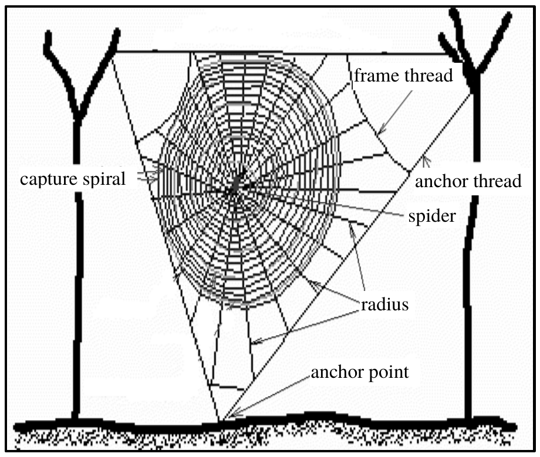

先讀文章、作答下方的題目，再展開後面的「看答案、依據句與逐段中譯」和「這一篇的生字表」。也可以到互動練習線上作答，交卷後自動批改。
第 1 段Spider webs are one of the most fascinating examples of animal architecture. The most beautiful and structurally ordered are the orb webs. The main function of the web is to intercept and hold flying prey, such as flies, bees and other insects, long enough for the spider to catch them. In order to do so, the threads of the web have to withstand the impact forces from large and heavy prey as well as environmental forces from wind and rain for at least a day in most cases.
第 2 段The orb web is found to have two main characteristics. The first is its geometry, which consists of an outer frame and a central part from which threads radiate outward. Enclosed in the frame are capture spirals winding round and round from the web center out to the frame. The whole web is in tension and held in place by anchor threads, which connect the frame to the surrounding vegetation or objects. The second and perhaps most important characteristic is the material with which it is built. Spider silk is a kind of natural composite that gives this lightweight fiber a tensile strength comparable to that of steel, while at the same time making it very elastic. Two types of silk threads are used in the web. One is highly elastic and can stretch to almost twice its original length before breaking and, for most types of spiders, is covered in glue. This type is used in the capture spiral for catching and holding prey. The other is stiffer and stronger, and is used for the radius, frames and anchor threads, which allows the web to withstand prey impact and to keep its structural strength through a wide range of environmental conditions.

44.What is this passage mainly about?
45.What does the word “so” in the first paragraph refer to?
46.Which part of the web is used for supporting the web itself?
47.According to the passage, which statement is true about the silk threads?
| 題號 | 官方答案 | 答對率 | 鑑別度 |
|---|---|---|---|
| 44 | (B) | — | — |
| 45 | (A) | — | — |
| 46 | (C) | — | — |
| 47 | (B) | — | — |
答對率：本卷非正式施測，無答對率
依據句：全文要讀完整篇才能判斷，不在某一句裡。
第 1 段The main function of the web is to intercept and hold flying prey
第 2 段The whole web is in tension and held in place by anchor threads, which connect the frame to the surrounding vegetation or objects.
第 1 段the threads of the web have to withstand the impact forces from large and heavy prey as well as environmental forces from wind and rain for at least a day in most cases.
第 1 段蜘蛛網是動物建築中最迷人的例子之一，其中最美麗、結構最有秩序的，是圓網。蜘蛛網的主要功能，是攔住並困住蒼蠅、蜜蜂和其他昆蟲等飛行的獵物，讓蜘蛛有足夠的時間把獵物抓住。為了做到這一點，蜘蛛網的絲必須承受又大又重的獵物撞上來的衝擊力，也要承受風雨等環境的力量，大多數情況下，至少要維持一天。
第 2 段研究發現，圓網有兩大特點。第一是它的幾何結構，由一個外框和一個中心組成，絲從中心向外放射。外框裡圍著捕獵螺旋，從網的中心一圈又一圈繞到外框。整張網處在繃緊的狀態，靠固定絲（anchor threads）固定在原位，固定絲把外框繫在周圍的植物或物體上。第二個特點，也可能是最重要的特點，是建造蜘蛛網的材料。蜘蛛絲是一種天然的複合材料，這種輕盈的纖維，抗拉強度和鋼差不多，同時又非常有彈性。蜘蛛網用了兩種絲。一種彈性很高，可以拉長到將近原來的兩倍才斷，大多數種類的蜘蛛，還會在這種絲上塗上黏液。這種絲用在捕獵螺旋上，用來捕捉並困住獵物。另一種絲比較硬、比較強韌，用在輻射絲、外框和固定絲上，讓蜘蛛網承受得住獵物的撞擊，在各種環境條件下都能保持結構的強度。
第 2 段The orb web is found to have two main characteristics.